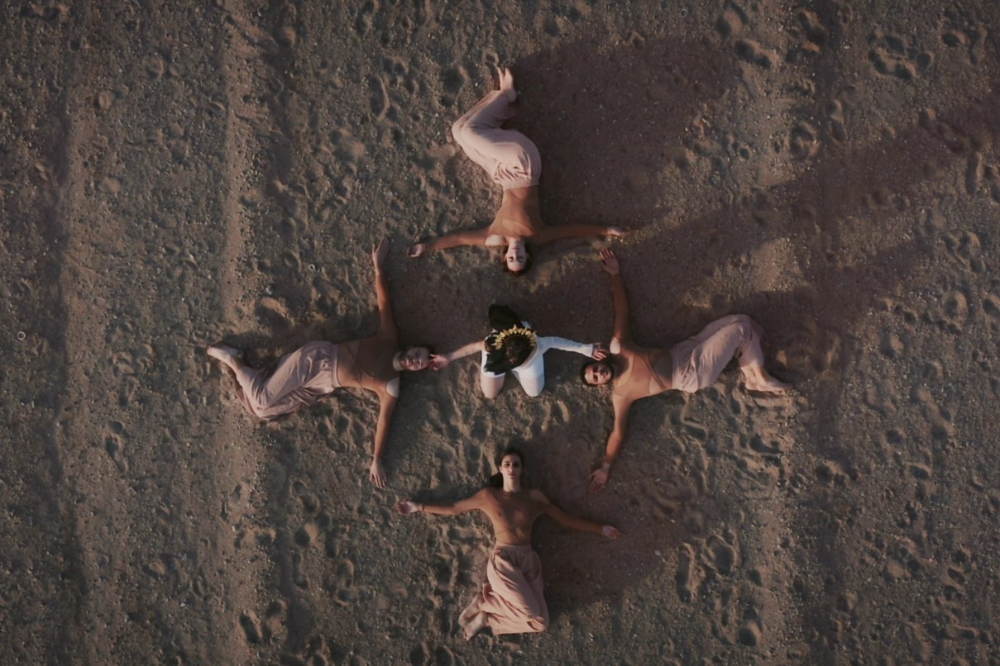

GALERÍA





El proyecto “ALAS“
crece en la mente de Raúl Pedrós, quién ha escrito y
desarrollado esta obra a lo largo de estos últimos años, desde el 2020 al
encontrarse en una odisea vital.
Tras un día darse cuenta de cuál era la realidad, decidió escribir aquello
que sentía y alimentaba su mente, dando inicio al principio de “ALAS”.
Una producción propia hecha desde el respeto, el amor, el talento y las
ganas de seguir avanzando como personas y en sociedad, de no tener
miedo a expresar nuestros sentimientos más débiles y vulnerables.
Podría definirse como un salvavidas o grito a la libertad, pero
sin embargo, es un sentimiento guardado, una herida abierta que
todavía no ha cicatrizado, una cerradura a medio abrir o la puerta
atascada que nadie se atreve a reparar.
Una obra biográfica que invita a la reflexión sobre la vida, las experiencias, el
tiempo, la gente que nos rodea, y la pérdida en todos sus puntos.
La pérdida no es más que un aprendizaje hacia el futuro.
Una biografía que se encontró en el abismo, superó la adversidad, ganó
la resiliencia y emergió la vida.
La trama se inicia con una llamada que altera el
curso de la historia para nuestro protagonista.
Incapaz de aceptar la gravedad de la situación, encuentra refugio en la danza y los
estudios, tratando de evadir la sombra de un padre enfermo, mientras la negación se
convierte en un rincón cómodo y la realidad en una visita no deseada.
A pesar de los desafíos, el amor emerge como una fuerza positiva y significativa,
actuando como un impulso para superar dificultades y hallar consuelo.
Después de enfrentar un giro inesperado en su vida, caracterizado por la pérdida, se
desencadena un declive en la mente del protagonista.
Este difícil periodo de duelo lo sumerge en una abrumadora sensación de llevar consigo
todo el peso emocional.
Durante este proceso, amigos y seres queridos se unen al protagonista, compartiendo sus
propias experiencias y ofreciendo su apoyo incondicional.
Tras sentirse confortado, el protagonista se da cuenta de que es crucial volver al punto
de partida, enfrentándose de nuevo a la realidad.
Este retorno se convierte en un paso esencial para seguir adelante.
ACERCA DEL ESPECTÁCULO...
Elenco: 5 Intérpretes
VERSIÓN: Valenciano y Castellano
Duración: 60 minutos
Este espectáculo combina: teatro, danza y performance.